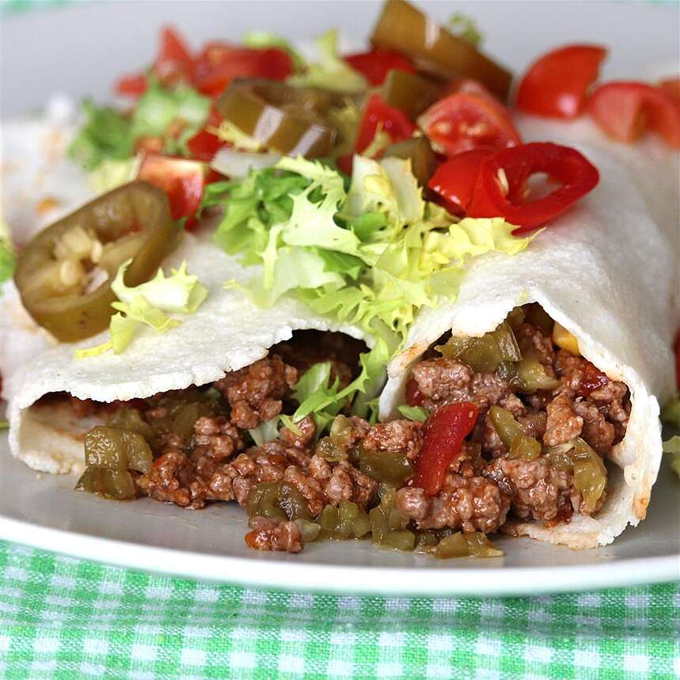

Miyamoto's Famous Spicy Burritos

Description
These beef burritos contain various peppers and seasonings on top of refried beans.
Top them off with lettuce, sour cream, cheese, and wrap up in a soft shell.
Ingredients
- 6 ounces sliced jalapeno peppers
- 1 tomato, diced
- 1 (4 ounce) can chopped green chile peppers
- 1 green bell pepper, diced
- 1 red bell pepper, diced
- 1 onion, diced
- 1½ tablespoons hot sauce
¼ teaspoon ground cayenne pepper
1 pound ground beef
1 (1 ounce) package burrito seasoning
1 (14 ounce) can refried beans
6 (10 inch) flour tortillas
1 (10 ounce) bag shredded lettuce
1 (8 ounce) container sour cream
1 (8 ounce) package shredded sharp Cheddar cheese
Steps
- Mix jalapeno peppers, tomato, green chile peppers, green bell pepper, red bell pepper, onion, hot sauce, and cayenne pepper together in a large bowl.
- Cook beef in a large skillet over medium-high heat, stirring to break up clumps, about 5 minutes. Drain excess grease. Add jalapeno pepper mixture and burrito seasoning; cook, covered, stirring occasionally, until flavors combine, about 10 minutes.
- Pour refried beans into a saucepan over medium-low heat. Cook and stir until heated through, about 5 minutes.
- Warm each tortilla in the microwave until soft, 15 to 20 seconds. Spread a layer of refried beans on top. Divide beef mixture among tortillas. Top with lettuce, sour cream, and Cheddar cheese. Fold in opposing edges of each tortilla and roll up into a burrito.
Source for Recipe: Spicy Beef Burritos